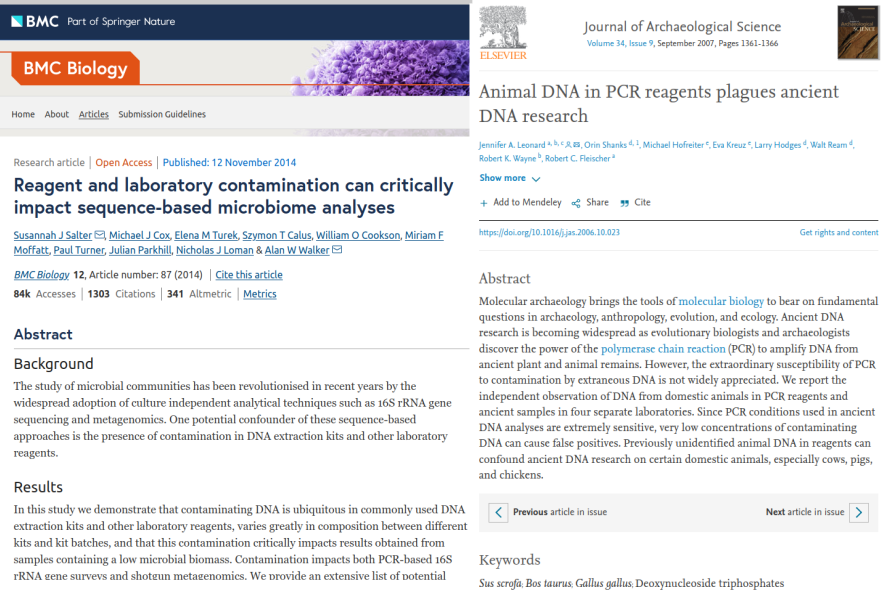

13 Contamination
For this chapter’s exercises, if not already performed, you will need to download the chapter’s dataset, decompress the archive, and create and activate the conda environment.
Do this, use wget or right click and save to download this Zenodo archive: 10.5281/zenodo.17155413, and unpack
tar xvf contamination.tar.gz
cd contamination/You can then create the subsequently activate environment with
conda env create -f contamination.yml
conda activate contaminationFollowing authentication, taxonomic classification or alignment themselves do not directly validate the findings or provide information about ancient or endogenous status of the detected organisms. It can happen that the detected organism
- was mis-identified (the DNA belongs to another organism than initially thought),
- has a modern origin (for example, lab or sequencing contaminant)
- is of exogenous origin (for example, an ancient microbe that entered the host post-mortem).
In this chapter, we will cover:
- how to detect modern contaminants via deamination profile, DNA fragmentation and post-mortem damage (PMD) scores
- how negative (blank) controls can help disentangle ancient organisms from modern contaminants
- how microbial source tracking can facilitate separating endogenous and exogenous microbial communities
The chapter has the following outline, focusing on taxonomic profiles:
- Decontamination via comparison with negative controls (blanks)
- Similarity to expected microbiome source (microbial source tracking)
Modern contamination can severely bias ancient metagenomic analysis. Also, ancient contamination, i.e. entered post-mortem, can potentially lead to false biological interpretations. Therefore, a lot of efforts in the ancient metagenomics field are directed on establishing methodology for identification of contaminants. Among them, the use of negative (blank) control samples is perhaps the most reliable and straightforward method. Additionally, one often performs microbial source tracking for predicting environment (including contamination environment) of origin for ancient metagenomic samples.
13.1 Decontamination
Modern contamination is one of the major problems in ancient metagenomics analysis. Large fractions of modern bacterial, animal or human DNA in metagenomic samples can lead to false biological and historical conclusions. A lot of scientific literature is dedicated to this topic, and comprehensive tables and sources of potential contamination (e.g. animal and bacterial DNA present in PCR reagents) are available.

A good practice to discriminate between endogenous and contaminant organisms is to sequence negative controls, so-called blanks. Organisms detected on blanks, like the microbial genera reported in the table below, can substantially facilitate making more informed decision about true metagenomic profile of a sample. Nevertheless, the table below may seem rather conservative since in addition to well-known environmental contaminants as Burkholderia and Pseudomonas it includes also human oral genera as Streptococcus, which are probably less likely to be of environmental origin.

It is typically assumed that an organism found on a blank has a lower confidence to be endogenous to the studied metagenomic sample, and sometimes it is even excluded from the downstream analysis as an unreliable hit. Despite there are attempts to automate filtering out modern contaminants (we will discuss them below), decontamination process still remains to be a tedious manual work where each candidate should be carefully investigated from different contexts in order to prove its ancient and endogenous origin.
If negative control samples (blanks) are available, contaminating organisms can be detected by comparing their abundances in the negative controls with true samples. In this case, contaminant organisms stand out by their high prevalence in both types of samples if one simply plots mean across samples abundance of each detected organism in true samples and negative controls against each other as in the figure below.
First move back into the KrakenUniq folder and load R.
cd /<path>/<to>/contamination/krakenuniq
RThen in here we can compare between true samples and negative controls
samples<-read.delim("krakenuniq_abundance_matrix/krakenuniq_abundance_matrix.txt",header=TRUE,
row.names = 1, check.names = FALSE, sep = "\t")
## The blanks abundance matrix has already been made for you
controls<-read.delim("blank_krakenuniq_abundance_matrix.txt",header=TRUE,
row.names = 1, check.names = FALSE, sep = "\t")
df <- merge(samples, controls, all = TRUE, by = "row.names")
rownames(df)<-df$Row.names; df$Row.names <- NULL; df[is.na(df)] <- 0
true_sample <- subset(df,select=colnames(df)[!grepl("control",colnames(df))])
negative_control <- subset(df,select=colnames(df)[grepl("control",colnames(df))])
plot(log10(rowMeans(true_sample)+1) ~ log10(rowMeans(negative_control)+1),
xlab = "Log10 ( Negative controls )", ylab = "Log10 ( True samples )",
main = "Organism abundance in true samples vs. negative controls",
pch = 19, col = "blue")
points(log10(rowMeans(true_sample)+1)[(log10(rowMeans(true_sample)+1) > 1) &
(log10(rowMeans(negative_control)+1)>1)] ~
log10(rowMeans(negative_control)+1)[(log10(rowMeans(true_sample)+1) > 1) &
(log10(rowMeans(negative_control)+1)>1)], pch = 19, col = "red")
text(log10(rowMeans(true_sample)+1)[(log10(rowMeans(true_sample)+1) > 1) &
(log10(rowMeans(negative_control)+1) > 1)] ~
log10(rowMeans(negative_control)+1)[(log10(rowMeans(true_sample)+1) > 1) &
(log10(rowMeans(negative_control)+1) >1)],
labels = rownames(true_sample)[(log10(rowMeans(true_sample)+1) > 1) &
(log10(rowMeans(negative_control)+1) > 1)], pos = 4)Once finished examining the plot you can quit R
## Press 'n' when asked if you want to save your workspace image.
quit()In the figure above, one point indicates an organism detected in a group of metagenomic samples. The points highlighted by red have high abundance in negative control samples, and therefore they are likely contamiannts.
In addition to PCR reagents and lab contaminants, reference databses can also be contaminanted by various, often microbial, organisms. A typical example that when screening environmental or sedimentary ancient DNA samples, a fish Cyprinos carpio can pop up if adapter trimming procedure was not successful for some reason.

It was noticed that the Cyprinos carpio reference genome available at NCBI contains large fraction of Illumina sequncing adapters. Therefore, appearence of this organism in your analysis may falsely lead your conclusion toward potential lake or river present in the excavation site.
13.1.1 decontam
Let us now discuss a few available computational approaches to decontaminate metagenomic samples. One of them is decontam R package that offers a simple statistical test for whether a detected organism is likely contaminant. This approach is useful when DNA quantitation data recording the concentration of DNA in each sample (e.g. PicoGreen fluorescent intensity measures) is available. The idea of the decontam is that contaminant DNA is expected to be present in approximately equal and low concentrations across samples, while sample DNA concentrations can vary widely. As a result, the expected frequency of contaminant DNA varies inversely with total sample DNA concentration (red line in the figure below), while the expected frequency of non-contaminant DNA does not (blue line).

13.1.2 recentrifuge
Another popular tool for detecting contaminating microorganisms is Recentrifuge. It works as a classifier that is trained to recognise contaminant microbial organisms. In case of Recentrifuge, one has to use blanks or other negative controls and provide microbial names and abundances on the blanks in order to train Recentrifuge to recognise endogenous vs. contaminant sources.
13.1.3 cuperdec
If one wants to assess the degree of contamination for each sample, there is a handy tool cuperdec, which is an R package that allows a quick comparison of microbial profiles in a query metagenomic sample against a database. The idea of cuperdec is to rank organisms in each sample by their abundance and then using an “expanding window” approach to compute their enrichment in a reference database that contains a comprehensive list of microbial organisms which are specific to a tissue / environment in question. The tool produces so-called Cumulative Percent Decay curves that aim to represent the level of endogenous content of microbiome samples, such as ancient dental calculus, to help to identify samples with low levels of preservation that should be discarded for downstream analysis.
First change into the cuperdec directory, and load R
cd /<path>/<to>/contamination/cuperdecThen we can load the files, generate the decay curves, set a preservation threshold cut-off, and plot the result.
Load R as usual.
RThen load the libraries and run the typical cuperdec workflow.
library("cuperdec"); library("magrittr"); library("dplyr")
# Load database (in this case an internal 'test' oral database from the package)
data(cuperdec_database_ex)
database <- load_database(cuperdec_database_ex, target = "oral") %>% print()
# Load abundance matrix and metadata
raw_table <- read.delim("../krakenuniq/krakenuniq_abundance_matrix/krakenuniq_abundance_matrix.txt", row.names=1) %>% as_tibble(rownames='Taxon')
taxatable <- load_taxa_table(raw_table) %>% print()
metadata <- as_tibble(data.frame(Sample = unique(taxatable$Sample),
Sample_Source = "Oral"))
# Compute cumulative percent decay curves, filter and plot results
curves <- calculate_curve(taxatable, database = database) %>% print()
filter_result <- simple_filter(curves, percent_threshold = 50) %>% print()
plot_cuperdec(curves, metadata = metadata, filter_result)Once finished examining the plot you can quit R
## Press 'n' when asked if you want to save your workspace image.
quit()In the figure above, one curve represents one sample, and the red curves have a very high amount of contamination and very low amount of endogenous DNA. These samples might be considered to be dropped from the downstream analysis.
13.2 Microbial source tracking
For the case of ancient microbiome profiling, in addition to traditional inspection of the list of detected organisms and comparing it with the ones detected on blanks, we can use tools that make a prediction on what environment the detected organisms most likely come from.
13.2.1 Sourcetracker
The most popular and widely used tool is called SourceTracker. SourceTracker is a Bayesian version of the Gaussian Mixture Model (GMM) clustering algorithm that is trained on a user-supplied reference data called Sources, i.e. different classes such as Soil or Human Oral or Human Gut microbial communities etc., and then it can estimate proportion / contribution of each of these sources the users actual samples called Sinks.
Originally, SourceTracker was developed for 16S data, i.e. using only 16S ribosomal RNA genes, but it can be easily trained using also shotgun metagenomics data, which was demonstrated in its metagenomic extension called mSourceTracker and its faster and more scalable version FEAST. The input data for SourceTracker are metadata, i.e. each sample has to have “source” or “sink” annotation as well as environmental label (e.g. Oral, Gut, Soil etc.), and microbial abundances (OTU abundances) quantified in some way, for example through QIIME pipeline, MetaPhlan or Kraken. The SourceTracker R script can be downloaded from https://github.com/danknights/sourcetracker.
In addition to the input files (already prepared for you), you will also need to clone the Sourcetracker 1 R code repository (unfortunately it’s not available as a package)
cd /<path>/<to>/contamination/sourcetracker/
git clone https://github.com/danknights/sourcetracker.gitUnfortunately Sourcetracker’s original R code was done a very long time ago, and has resulted in some incompatiblities with more recent versions of R.
If using a more recent version of R (such as in this chapter’s conda environment), you will need to perform the following ‘patching’ of the code, to prevent an error.
Run the following command to comment out the offending lines (538, 539), where R’s behaviour in later versions of a fundamental validation function has changed.
sed -i '538,539s/^/#/' sourcetracker/src/SourceTracker.rSourcetracker expects two input data frames: metadata with at least sample name, environment and source / sink labels, and abundance matrix. Note that source and sink metadata and abundances have to be merged together prior to using SourceTracker. Here we are going to use data from the Human Microbiome Project (HMP) as sources, and we are going to merge the HMP data with the sink samples into single OTU table and meta-data table.
cd /<path>/<to>/contamination/sourcetracker/
## Load R
RThen in R we can load the HMP source files, and our ‘sink samples’ from the KrakenUniq matrix we made earlier, and clean them up to make them compatible for Sourcetracker.
We’ve included the Sourcetracker R script in the repository for you, as it’s not available on conda.
## Load files
otus_hmp <- read.delim("otus_hmp.txt", header = TRUE, row.names = 1, sep = "\t")
meta_hmp <- read.delim("meta_hmp.txt", header = TRUE, row.names = 1, sep = "\t")
otus_sink<-read.delim("../krakenuniq/krakenuniq_abundance_matrix/krakenuniq_abundance_matrix.txt",header=T,row.names=1,sep="\t")
## Join source and sink tables into one
otus <- merge(otus_hmp, otus_sink, all = TRUE, by = "row.names")
## Put OTU IDs as row names and replace NAs with 0
rownames(otus) <- otus$Row.names; otus$Row.names <- NULL; otus[is.na(otus)] <- 0
## Set column and row names for meta
meta_sink <- data.frame(ID = colnames(otus_sink), Env = "Unknown", SourceSink = "sink")
rownames(meta_sink) <- meta_sink$ID; meta_sink$ID<-NULL
metadata <- rbind(meta_hmp, meta_sink)
## Further value cleanups and sample filtering to remove not useful HMP samples
otus <- as.data.frame(t(as.matrix(otus)))
otus[otus > 0] <- 1; otus <- otus[rowSums(otus)!=0,]
metadata<-metadata[as.character(metadata$Env)!="Vaginal",]; envs <- metadata$Env
common.sample.ids <- intersect(rownames(metadata), rownames(otus))
otus <- otus[common.sample.ids,]; metadata <- metadata[common.sample.ids,]Next, training SourceTracker on source samples and running predictions on sink samples can be done using following commands:
# Train SourceTracker on sources (HMP) and run predictions on sinks
source('sourcetracker/src/SourceTracker.r')
train.ix <- which(metadata$SourceSink=='source')
test.ix <- which(metadata$SourceSink=='sink')
st <- sourcetracker(otus[train.ix,], envs[train.ix])
results <- predict(st, otus[test.ix,], alpha1 = 0.001, alpha2 = 0.001)Finally, we can plot SourceTracker environment inference in the form of barcharts as follows:
# Sort SourceTracker proportions for plotting
props <- results$proportions
props <- props[order(-props[,"Oral"]),]
results$proportions <- props
# Prepare SourceTracker output for plotting
name <- rep(rownames(results$proportions), each = 4)
value <- as.numeric(t(results$proportions))
labels <- c("Gut","Oral","Skin","Unknown"); condition<-rep(labels, length(test.ix))
data <- data.frame(name, condition, value)
# Plot SourceTracker inference as a barplot
library("ggplot2")
ggplot(data, aes(fill=condition, y=value, x = reorder(name, seq(1:length(name))))) +
geom_bar(position = "fill", stat = "identity") +
theme(axis.text.x = element_text(angle = 90, size=5, hjust=1, vjust=0.5)) +
xlab("Sample") + ylab("Fraction")Once finished examining the plot you can quit R
## Press 'n' when asked if you want to save your workspace image.
quit()In the figure above (Figure 13.1) the SourceTracker was trained on Human Microbiome Project (HMP) data, and was capable of predicting the fractions of oral, gut, skin or other microbial composition on the query sink samples. In a similar way, environmental soil or marine microbes can be used as Sources. In this way, environmental percentage of contamination can be detected per sample.
A drawback of SourceTracker, mSourceTracker and FEAST is that they require a microbial abundance table after a taxonomic classification with e.g. QIIME or Kraken has been performed. Such taxonomic classification can be biased since it is computed against a reference database with known taxonomic annotation. In contrast, a novel microbial source tracking tool decOM aims at moving away from database-dependent methods and using unsupervised approaches exploiting read-level sequence composition.

13.2.2 deCOM
decOM uses kmtricks to compute a matrix of k-mer counts on raw reads (FASTQ files) from source samples, and then uses the source k-mer abundance matrix for looking up k-mer composition of sink samples. This allows decOM to calculate microbial contributions / fractions from the sources. For example, for estimating contributions from ancient Oral (aOral), modern Oral (mOral), Skin and Sediment / Soil environments one can use an already computed source matrix from here https://github.com/CamilaDuitama/decOM/ and provide it as a -p_sources parameter.
If doing a self-guided tutorial, you will need to download a rather large pre-built database.
## In the directory
## Note that decOM does not like dots in names so make symlinks
for i in ../rawdata/*trimmed.fastq.gz; do
ln -s "$i" "${i/.trimmed/_trimmed}"
done
# Prepare input fof-files that have a key - value format
for i in {1..10}; do
echo "sample${i}_trimmed : sample${i}_trimmed.fastq.gz" > sample${i}_trimmed.fof
echo sample${i}_trimmed >> FASTQ_NAMES_LIST.txt;
done
# Download pre-built kmer-matrix of sources (aOral, mOral, Sediment/Soil, Skin)
wget https://zenodo.org/record/6513520/files/decOM_sources.tar.gz
tar -xf decOM_sources.tar.gzThe following example command is how you would execute deCOM. However as this requires a very large database file and thus large memory requirements, therefore we have already made available for you the output files from this step.
# DO NOT RUN!: Run decOM predictions
decOM -p_sources decOM_sources/ -p_sinks FASTQ_NAMES_LIST.txt -p_keys decOM/FASTQ -mem 900GB -t 15You can find the relevant output files for the rest of this chapter in the following directory already prepared for you i.e.the output of deCOM with our simulated data from the command above.
cd /<path>/<to>/contamination/decomThe entire output from running deCOM on the simulated data was 29GB!
In the example command line used to generate, the -p_sinks parameter provides a list of sink samples, for example SRR13355807.
The sink fastq-files are placed together with keys fof-files containing the mapping between fastq file names and locations of the fastq-files, for example SRR13355807 : SRR13355807.fastq.gz. The contributions from the sources to the sink samples, which are recorded in the decOM_output.csv output file (which is in the contamination/decom directory already for you), can then be processed and plotted as follows:
Load R
RThen we can make a plot
df<-read.csv("decOM_output.csv", check.names=FALSE)
result <- subset(df, select = c("Sink", "Sediment/Soil", "Skin", "aOral",
"mOral", "Unknown"))
rownames(result) <- result$Sink; result$Sink <- NULL
result <- result / rowSums(result)
result<-result[order(-result$aOral),]
name <- rep(rownames(result), each = 5); value <- as.numeric(t(result))
condition <- rep(c("Sediment/Soil","Skin","aOral","mOral","Unknown"),
dim(result)[1])
data <- data.frame(name, condition, value)
library("ggplot2")
ggplot(data, aes(fill=condition, y=value, x=reorder(name,seq(1:length(name))))) +
geom_bar(position = "fill", stat = "identity") +
theme(axis.text.x = element_text(angle=90, size = 5, hjust = 1, vjust = 0.5)) +
xlab("Sample") + ylab("Fraction")Once finished examining the plot you can quit R
## Press 'n' when asked if you want to save your workspace image.
quit()decOM has certain advantages compared to SourceTracker as its is a taxonomic classification / database free approach. However, it also appears to be very sensitive to the particular training / source data set. In the example above it can be seen that the microbial source tracking of sink samples is very much dominated by the Oral community, which was the training / source data set.
13.3 (Optional) clean-up
Let’s clean up your working directory by removing all the data and output from this chapter.
The command below will remove the /<PATH>/<TO>/contamination directory as well as all of its contents.
Always be VERY careful when using rm -r. Check 3x that the path you are specifying is exactly what you want to delete and nothing more before pressing ENTER!
rm -rf /<PATH>/<TO>/contamination*Once deleted you can move elsewhere (e.g. cd ~).
We can also get out of the conda environment with
conda deactivateTo delete the conda environment
conda remove --name contamination --all -y13.4 Summary
In this chapter we have learned that:
- Negative controls are important for disentangling ancient / endogenous from modern / exogenous contamination
- Microbial source tracking is another layer of evidence that can facilitate interpretation of ancient metagenomic findings
13.5 Questions to think about
- What is a false-positive microbial finding and how can we recognise it?
- What is contamination and how can it bias ancient metagenomic analysis?
- What is a negative (blank) control sample and why is it useful to have?
- What is microbial source tracking and how can it help with decontamination?
13.6 Resources
SourceTracker: Knights D, Kuczynski J, Charlson ES, Zaneveld J, Mozer MC, Collman RG, Bushman FD, Knight R, Kelley ST. Bayesian community-wide culture-independent microbial source tracking. Nat Methods. 2011 Jul 17;8(9):761-3. doi: 10.1038/nmeth.1650. PMID: 21765408; PMCID: PMC3791591.
deCOM: https://www.biorxiv.org/content/10.1101/2023.01.26.525439v1, doi: https://doi.org/10.1101/2023.01.26.525439
aMeta: https://www.biorxiv.org/content/10.1101/2022.10.03.510579v1, doi: https://doi.org/10.1101/2022.10.03.510579
Bowtie2: Langmead, B., Salzberg, S. Fast gapped-read alignment with Bowtie 2. Nat Methods 9, 357–359 (2012). https://doi.org/10.1038/nmeth.1923
cuperdec: https://cran.r-project.org/web/packages/cuperdec/index.html
decontam: https://www.bioconductor.org/packages/release/bioc/html/decontam.html